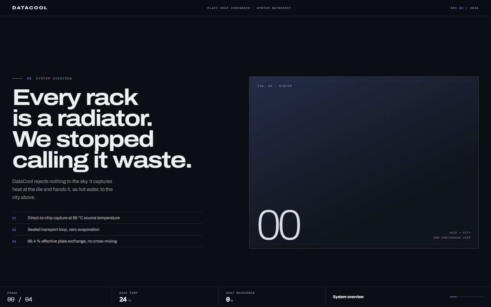
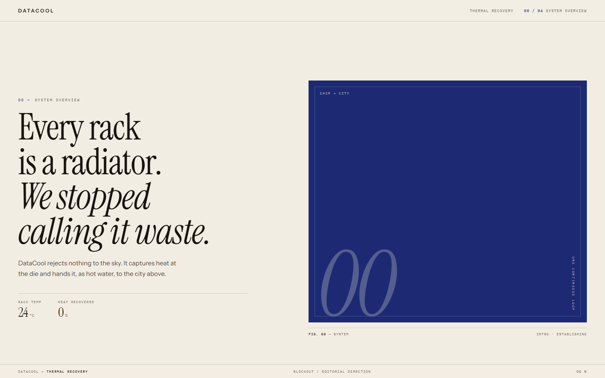
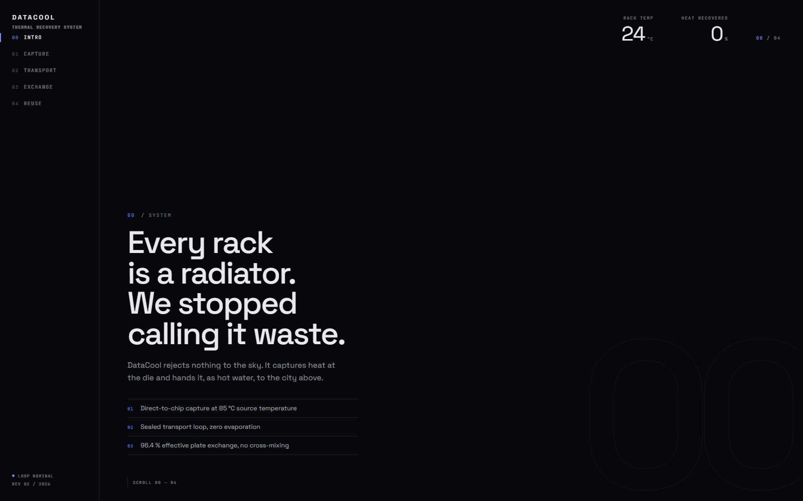

Same copy, same five phases, same scroll behaviour — only the type system, layout shell and HUD change. Open each one full-page and scroll it before choosing.

An engineering datasheet for a machine. Graphite base, extended grotesque headlines, a persistent bottom spec strip replacing the floating HUD card.

Bone paper instead of dark UI. Large serif headlines, one saturated colour field per phase, metrics as an editorial caption rather than a widget.

Near-black instrumentation. Fixed phase rail on the left, live readouts top-right, outlined numerals bleeding off the frame. The most system-like of the three.